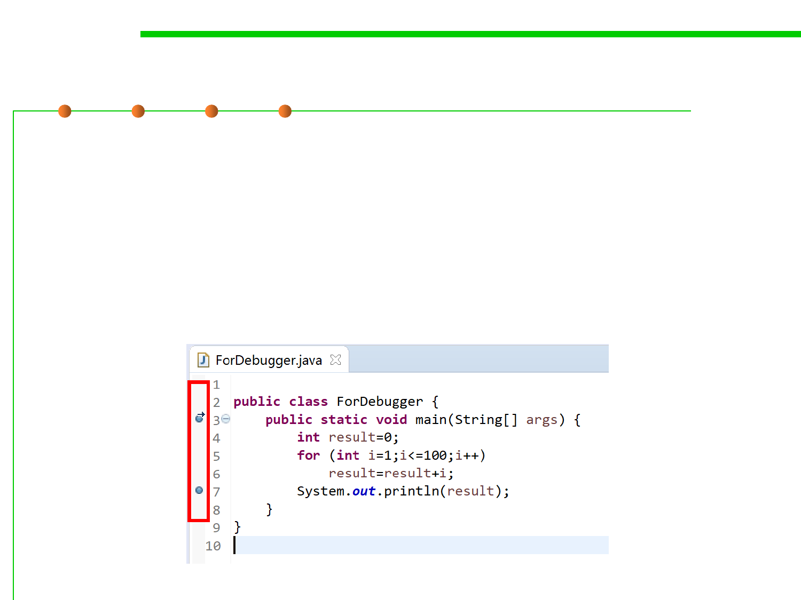

Debugger: breakpoint
7.4 Debugging
▪ Setting Breakpoints in Eclipse
– To set a breakpoint at a given line in Eclipse, double-click on that line.
– To delete a breakpoint at a given line in Eclipse, double-click the
breakpoint symbol on that line.
– To disable a breakpoint in Eclipse by right-clicking the breakpoint symbol
in the line in question. A menu will pop up. Note that the Toggle option
means to delete the break-point, while Disable/Enable means the obvious.